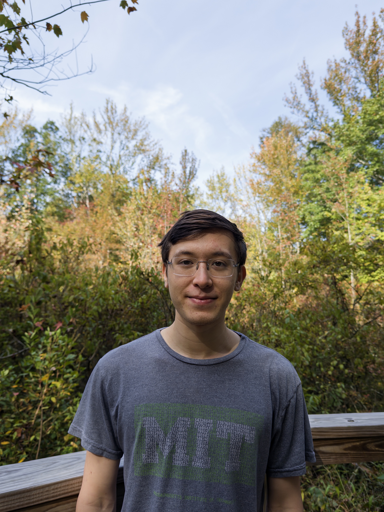

I'm David Andrews. I work on LLM agents.
CS PhD student at Georgia Tech. I build in the open.
what i'm working on
I'm currently working broadly on LLM agent research:
I'm a CS PhD student advised by Professor Chao Zhang, focusing on AI for scientific research and automating AI research itself. I also work on RL training for enhancing LLM agent reasoning and tool use, and build the infrastructure behind this work, including sandbox management systems and asynchronous training frameworks.
This summer I interned at Plato, a startup building RL environments for frontier AI labs, where I founded the company's research and model training arm and built its RL training and inference stack for computer-use agents from scratch.
Previously, with Professor Celine Lin in the EIC Lab, I built RTL-Universe, a frontier-difficulty benchmark for LLM agents in hardware design.
select projects
- DuckTrack — a tool for recording human computer use to build training data for multimodal agents. github / blog post
- emergent misalignment — replication and investigation of emergent misalignment from benign fine-tuning. github / LessWrong
- Multiturn RL SWE — multiturn reinforcement learning for software engineering agents. github
- LLM from Scratch — a small LLM running inside MIT's Scratch, the block-based kids programming language. github
- PRM annotation platform — a platform for annotating process reward model training data. github
fun things about me
I've been hosting Minecraft servers for 13 years, which is how I originally got into Linux, system administration, and computers in general. These days I run infra for the GT Drehmal community, an RPG adventure Minecraft server that I founded, and help host events for the Cross Collegiate Minecraft League (2CML).
I'm a member of the AI Safety Initiative (AISI) club at GT as well as an organizer at DuckAI, an open source research community at GT.
I played piano for 10 years, and I particularly enjoy classical or new age music. I also played baritone horn.
I'm a three-stripe white belt in BJJ, beginner climber, and avid hiker.
I enjoy cooking (LLM-assisted) and origami!